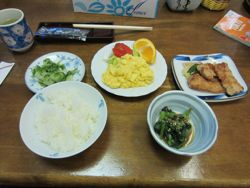

The sad thing is, I wasn't all that hungry when I was in Japan. Normally I
love to eat but I couldn't get excited about food, probably because of the heat
and humidity. It's terribly ironic, to me, to go all that way to somewhere
where I'd normally want to stuff my face and then not being interested.
Fortunately I was hanging out with a person with a normal appetite, so we ate
regularly and interestingly anyway. (If I had been by myself I might have just
survived on bread and fruit juice, and that would have been a pity.)
My first meal in Japan was dinner: okonomiyaki at a cook-it-yourself restaurant
near Ameyayokocho, with Dave and his friend Robert. We had a kind of
miscellaneous omelette, fried enoki mushrooms in butter (so good!) and some
sautéed greens. The greens came in their own little soup of cornstarchy
sauce, which you are supposed to add gradually to the greens. After you have
cooked the greens and sauce, you add a bunch of cheese, which suddenly changes
the whole thing from sautéed greens to fried cheese with bits of greens. Tasty.
We also had a couple of flagons of Japan's Default Beer. You go into a
restaurant and order "beer" and they bring you "beer", a glass mug of a
cold, easy-drinking lager with a good inch of head on it. (Usually Asahi
Super-Dry or Kirin Lager, I think.) It was the perfect drink in that weather,
and Dave and I had one with almost every meal.

For the next morning's breakfast I had ordered the "Japanese breakfast" at my
ryokan, and I was
eager to find out what it entailed. It turned out to be rice, miso soup, some
lightly-pickled sliced cucumber, steamed greens in a sweet sesame sauce,
scrambled egg with tomato and orange on the side, and some grilled fish. Also
green tea and a little package of nori. It was a lot of food and I didn't
finish everything, which I'm sure is either completely insulting or totally
acceptable. The fish was delicious: mild and slightly crispy on the outside.
 For lunch that day I decided we should have sushi, since that's the
quintessential Japanese food in my mind. Dave found us a conveyor belt sushi
place where we had eel, salmon, tuna, tiny fish, tiny shrimp, and plenty more.
For lunch that day I decided we should have sushi, since that's the
quintessential Japanese food in my mind. Dave found us a conveyor belt sushi
place where we had eel, salmon, tuna, tiny fish, tiny shrimp, and plenty more.
Later that afternoon we wandered to Harajuku, where the street eat of choice is
crepes. This is curious because there aren't really any other street eats in
Japan, apart from the odd soft-serve ice cream place — walking while eating
just isn't done — but for some reason it's acceptable to eat a filled crepe
folded into a cone while walking around Harajuku. I had ice cream, chocolate
syrup and whipped cream in my crepe; I think Dave had bananas or apples in
syrup or something similar. (Dave has lost lots of weight since moving to Japan
by eating carefully and walking a lot; I think he must have had to eat even
more carefully and walk even more after I left to make up for sharing my bad
habits while I was there.)
For dinner that evening we went to a (chain?) restaurant which offered
a variety of food: garlic cheese bread, pizza, shrimp chips, chicken.
We had some gyoza and an assorted yakitori plate (grilled chicken parts on sticks; mmm, chicken kidneys). I think we also had something with cheese, but it's
hard for me to say because I was rocking some serious jet lag and pretty
much falling asleep on my plate.
Next day's Japanese breakfast was about the same, but with salmon instead
of the mystery white fish.
 We had ramen for lunch in Fujisawa, on the way to Enoshima. It was
a rustic little restaurant, staffed only by two cooks behind the bar. You order
by selecting and paying for your dish from a machine, then giving the
resulting receipt to the cooks. It was delicious: the meat was tender,
the noodles were soft with that particular chewiness you only get from
freshly made noodles, and the broth was savoury and rich. (I wish I had
been as hungry when I had it in front of me as I am now writing about it.
Irony!)
We had ramen for lunch in Fujisawa, on the way to Enoshima. It was
a rustic little restaurant, staffed only by two cooks behind the bar. You order
by selecting and paying for your dish from a machine, then giving the
resulting receipt to the cooks. It was delicious: the meat was tender,
the noodles were soft with that particular chewiness you only get from
freshly made noodles, and the broth was savoury and rich. (I wish I had
been as hungry when I had it in front of me as I am now writing about it.
Irony!)
It was on Enoshima that we had the mango softserve ice cream that I
posted about earlier. It was almost like a mango sorbet, with enough
creaminess to make it luxurious without cutting the refreshing fruitiness
of the mango. Served in a twist ("mix") with vanilla it was like a
creamsicle all grown up.
After Enoshima we went on a long train ride to a yakitori restaurant run by
some friends of Dave's. We could have ridden the whole way in a standard JR
train car, like a fancier subway car, but there's an option on JR (the rail
company) to take a "Green car", a sort of first-class which is more like a
double-decker GO train car — cushy reclining seats with a tray, and drink
and snack service (with very cheap beer!)
 The restaurant was like a pub, kind of dark and medieval with low ceilings and
lots of wood. (Never mind the high-tech powered sliding door which are all-but
ubiquitous in stores and restaurants.) The sink in the picture gives you an
idea of the rough-hewn feel of the place.
The restaurant was like a pub, kind of dark and medieval with low ceilings and
lots of wood. (Never mind the high-tech powered sliding door which are all-but
ubiquitous in stores and restaurants.) The sink in the picture gives you an
idea of the rough-hewn feel of the place.
Once again the food was delicious: we had grilled bits and pieces on sticks,
mostly-raw chicken (I wasn't up for more than a taste of that), and
hiyayakko,
sliced tofu with soy sauce and fish flakes. (A.k.a., "That cold shit.", as
Dave thinks of it.) Also more beer.
For Sunday's breakfast I requested "Western-style", as much because I wanted
to see what they would do with it as because I craved familiar food.
"Western-style" breakfast turns out to include back bacon, scrambled egg,
a giant slab of toasted white bread, tomato and some orange. Also penne
with sweet tomato sauce, and steamed broccoli. Of course.
 We had lunch at a chain tonkatsu restaurant called Wako. I had a combo with
pork medallions, a shrimp and some pumpkin, all breaded and deep-fried, as well
as a haystack of shredded cabbage and the usual miso soup and bowl of white
rice. There was a side of mayo, for what I'm not sure (I made the cabbage into
coleslaw with it). Also chawan mushi, a savoury custard. The tonkatsu was
crispy and delicious and the pile of cabbage was a refreshing change from the
analogous pile of french fries you would get on this side of the Pacific. It,
as well as the miso soup (I think) were bottomless — you could hail the
waitress and she would come over with a enormous bowl of shredded cabbage and
pile another stack of it on your plate.
We had lunch at a chain tonkatsu restaurant called Wako. I had a combo with
pork medallions, a shrimp and some pumpkin, all breaded and deep-fried, as well
as a haystack of shredded cabbage and the usual miso soup and bowl of white
rice. There was a side of mayo, for what I'm not sure (I made the cabbage into
coleslaw with it). Also chawan mushi, a savoury custard. The tonkatsu was
crispy and delicious and the pile of cabbage was a refreshing change from the
analogous pile of french fries you would get on this side of the Pacific. It,
as well as the miso soup (I think) were bottomless — you could hail the
waitress and she would come over with a enormous bowl of shredded cabbage and
pile another stack of it on your plate.
Having had a tasty plate of deep fried for lunch, we set out vaguely in search
of something healthy for dinner. I moved to a hotel in Saitama on Sunday, so we
were in Saitama for dinner, and had a choice of the usual suspects: ramen,
sushi, and so on. We eventually talked each other into Korean barbeque and
decided to be healthy another day.
Most Japanese restaurants have pictures of all the dishes they offer, but the
interesting thing about Korean barbeque is that the food in the pictures is
still raw. I guess that's not the most interesting thing — the most
interesting thing is that the food they bring to your table is still raw. Each
table is fitted with its very own little fire pit, some intrepid young man
comes by with a bucket of hot coals and skillfully sets it into place, and then
you use cunning little tongs to cook everything to your taste. We had some
delicious strips of beef and placated the gods of healthy eating by roasting up
some assorted veggies.
There was no breakfast at my hotel in Saitama, so on Monday morning I ventured
out on my own to find something to eat. It seems like an odd choice, but I
found it at 7/11. They have a decent selection of cellophane-wrapped pastries,
so I bought brioche sort of thing, and added a can of delicious Boss
Caffe Latte from the vending machine in the hotel lobby.
Lunch led us on an epic train journey to Utsonomiya, the world's
gyoza capital, for (that's right) gyoza. We went to a tiny restaurant
and ordered their special plate of 12 gyoza*, all different (and beer!) There
were pork, shrimp, chicken, kim chee, pork and shiso, and some more which
were delicious but not readily identifiable. (I actually left the kim chee
dumpling; it was just too spicy for lightweight me — Dave helped
me out with it.)
(The more I write this post the sadder I am that I had no appetite to speak of
while I was in Tokyo. Everything was good but it would have been even better if
I had been hungry.)
By dinner time I was craving a Pickle Barrel big salad. I don't know what it
says about me that when I'm in a foreign country full of exotic, delicious food
I crave the most pedestrian Western food, but there it is. All I desired was a
giant bowl of crispy iceberg lettuce, ham, eggs, and chicken smothered in some
unctuous dressing. There is about 0% chance of finding that anywhere in Tokyo,
let alone Saitama. We wandered around sussing out various restaurants and
finally chose an odd little second-floor pub, advertising $3 beer in the
window. (We weren't sure whether $3 beer was a good sign or not, food-wise,
but we figured at least it meant there would be $3 beer.)
The place was decorated in a blackened-wood and fishing nets motif. We got
ourselves a beer, and ordered what might be the closest thing to my big salad
you'd find in Tokyo: a green salad with sashimi. It was delicious, and hit
the spot. We also had shrimp and cheese sticks — shrimp with cheese
rolled in an egg roll wrapper and fried — and I think Dave ordered some
other stuff I either didn't try or tried and didn't remember.
 On Tuesday my 7/11 breakfast was a boiled egg (individually wrapped)
and a Georgia Iced Coffee. I thought the Georgia Iced Coffee would be pretty
much the same as the Boss Iced Coffee, but it was much more bitter and
metallic-tasting. I learned from Dave, later, that all the different
iced coffee brands have distinctive flavours, and I just lucked into the
one I like best first try.
On Tuesday my 7/11 breakfast was a boiled egg (individually wrapped)
and a Georgia Iced Coffee. I thought the Georgia Iced Coffee would be pretty
much the same as the Boss Iced Coffee, but it was much more bitter and
metallic-tasting. I learned from Dave, later, that all the different
iced coffee brands have distinctive flavours, and I just lucked into the
one I like best first try.
We were down at Tokyo Bay at lunchtime — I wanted to check out Tokyo's
"Harbourfront". There's a big mall down there (Doug Ford take note!) and
they were having some kind of ramen festival in one of the food courts. (Or
else one of the food courts was set up to simulate a perpetual ramen festival;
now that I think about it I'm not quite sure which.) I had a hankering for eel,
so I ordered something which looked like a delicious bowl of ramen with eel on
top. Turns out the colour reproduction on the picture was a little off, and I
got a delicious bowl of ramen with two slices of boiled bacon on top. (Dave
tells me it was Okinawa-style ramen, which is of course different from the
various other kinds of ramen.) I know boiled bacon sounds disgusting, but it
was smoky and tender. I expect if you tried boiling Canadian mass market bacon
it would fall apart or go slimy, but I think if you got good bacon from a
butcher it would boil up nicely. Try it in soup!
I also had some melon soda. Melon is a big flavour over there, although it
seemed more vaguely fruity than tasting of any melon I'm familiar with.
After we walked around the waterfront some more we had kakigori, which
is like a sno-cone or granita or whatever they call flavoured ice where
you are. I chose Blue Hawaii flavour, which is... blue. And sweet. It
was delicious, just the thing to eat while sitting by the water and
sweating gently.
Our next stop was Tokyo Tower, where I had a piece of cheesecake at
the restaurant up top. Cheesecake seems to be quite popular in Tokyo, and
I was curious as to how it was interpreted. It was softer and smoother
than a New York-style cheesecake, and had a nice sharp cream cheesy bite.
Dinner was fancy, at the Chou Chou Dinning Room (not to be confused
with Tony's Fine Dinning, a roti place up on Sheppard). Like many restaurants
in Tokyo, it was on the second floor — Tokyoites don't have our
aversion to going up a level or two to eat or shop. The restaurant
was beautiful; we entered on a transparent walkway over a mock riverbed
of white stones. Shiny dark wood and elegant lighting set a mood of
quiet refinement.
Keeping with the classy style of the place, I refrained from ordering my
usual beer and had a grapefruit sour instead. We ordered chicken
gyoza and little fish baked in phyllo, with the
heads still on. But the highlight of the meal was the risotto, a creamy
sweet-savoury delight.
Wednesday was my last day in Tokyo. My final 7/11 breakfast was a green
bun filled with cantaloupe-flavoured custard. Why was it green?
Green tea? Melon? Mint? It's hard to say, and the flavour wasn't much
help. The custard was delicious, though, and not something I'm likely
to ever get in Toronto. I also had a tub of yogurt in a vague attempt
to eat some protein, and, sadly, my last can of Boss Caffe Latte.
Dave and I decided that my last meal in Tokyo should be the iconic conveyor
belt sushi, so for lunch we ducked into a really cheap little place.
It was fascinating — they had laid out the restaurant so that the
conveyor belt wound round into every cranny of the odd-shaped room, so it
formed an irregular, jagged L-shape and we had to shuffle sideways behind half
the other diners to get to our chairs.
I didn't realize how cheap the place was until Dave pointed out they were
serving fake wasabi. But even the cheapest saddest Tokyo sushi is still fresh
and delicious; really, the only thing that distinguished it from more expensive
sushi was that the rolls were slightly misshapen. We had the usual selection of
tuna, salmon, and clam. Dave scooped himself a plate of natto sushi, and I had
some alarmingly tacky shrimp salad sushi, while I amused myself trying to think
what you could serve conveyor-belt style in a Canadian restaurant: sandwiches?
Salads? It's such a great way to have lunch: fast, fresh and cheap.
My very last Japanese food purchase was a can of peach soda from a
vending machine in the airport. Even though I was only there for a week, the
idea of Japanese vending machines has lodged itself in my brain, to the
extent that whenever I go to a public park in Toronto I'm always briefly
disappointed that I can't buy myself a can of coffee or a soda from a handy
vending machine.
I love eating in other countries; you learn so much about a place from what and
how they eat. I loved the little plates, which allow you to try lots of
different things, and to eat as much as you like and no more. I liked the way
everyone orders together and shares the food. I think the Japanese custom of
not eating while walking is healthy and sensible (although it would take me
more than a week to get out of the habit). And I liked the food itself:
everything (apart from my 7/11 delights) was freshly made from excellent
ingredients. Tokyo is a great destination if you like to eat.


 There are hardly any urban animals in Tokyo. I didn't see any wild mammals at
all (although I'm sure they have rats) and the only birds I saw were
crows and sparrows. There are cats around shrines because the monks
feed them.
There are hardly any urban animals in Tokyo. I didn't see any wild mammals at
all (although I'm sure they have rats) and the only birds I saw were
crows and sparrows. There are cats around shrines because the monks
feed them. The good people of Tokyo don't suck it up and act all stoic, they hate it and
deal with it in a number of ways. Hand fans are very popular and no-one is shy
about using them — lots of companies give out fans as promotional material.
Everyone carries little
The good people of Tokyo don't suck it up and act all stoic, they hate it and
deal with it in a number of ways. Hand fans are very popular and no-one is shy
about using them — lots of companies give out fans as promotional material.
Everyone carries little  All the manhole covers are pretty, and they're different in every area.
All the manhole covers are pretty, and they're different in every area. Some of the bathroom stalls have little child seats mounted on the wall
for you to park your baby when you pee. I cannot tell you how much I
wanted this feature when my kids were babies!
Some of the bathroom stalls have little child seats mounted on the wall
for you to park your baby when you pee. I cannot tell you how much I
wanted this feature when my kids were babies!
 Shoes in Japan are awesome. Okay, plenty of women wear boring shoes, but
there are some amazing shoes worn just out and about. And the fancy shoe
ladies are dedicated to high heels.
Shoes in Japan are awesome. Okay, plenty of women wear boring shoes, but
there are some amazing shoes worn just out and about. And the fancy shoe
ladies are dedicated to high heels.